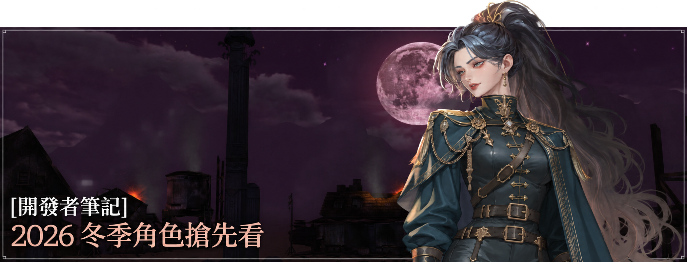
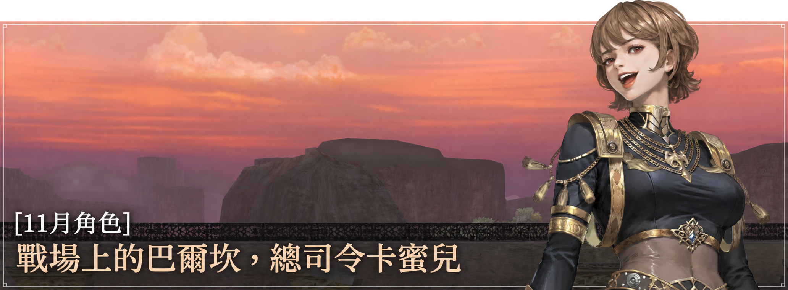
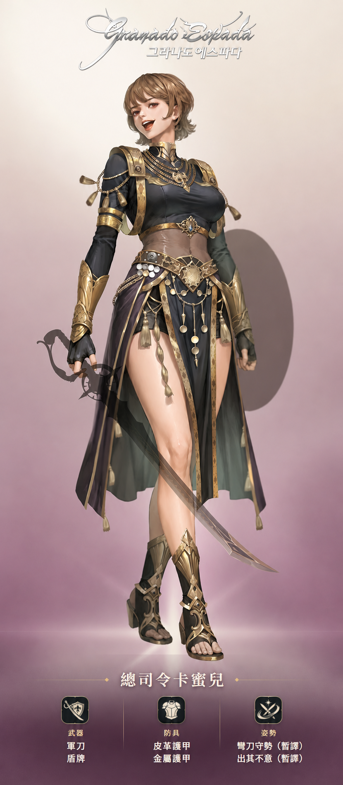
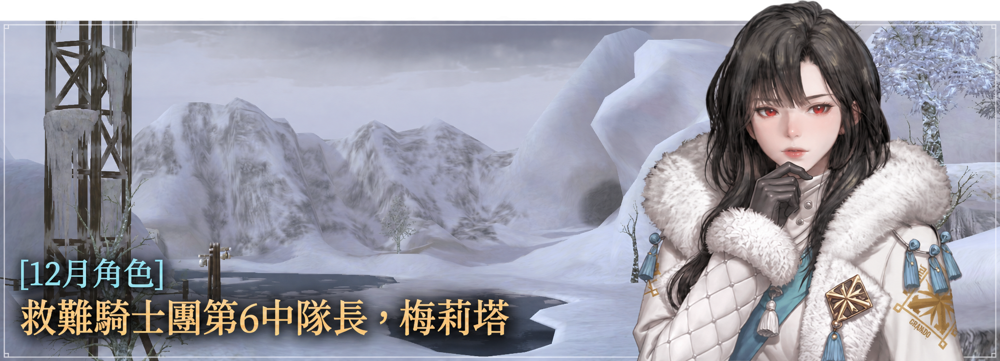
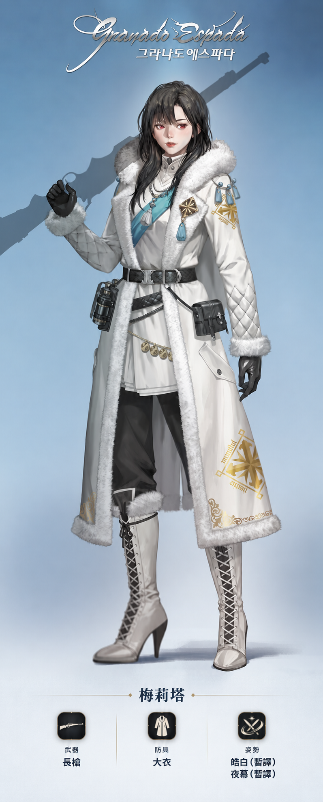
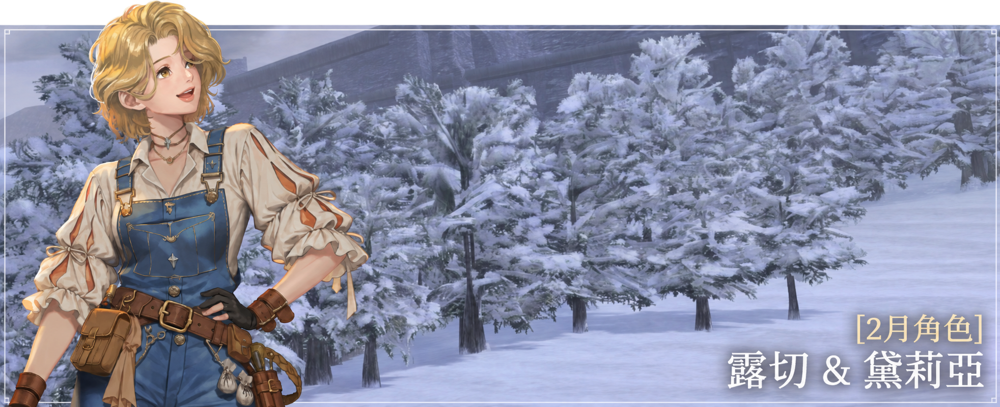
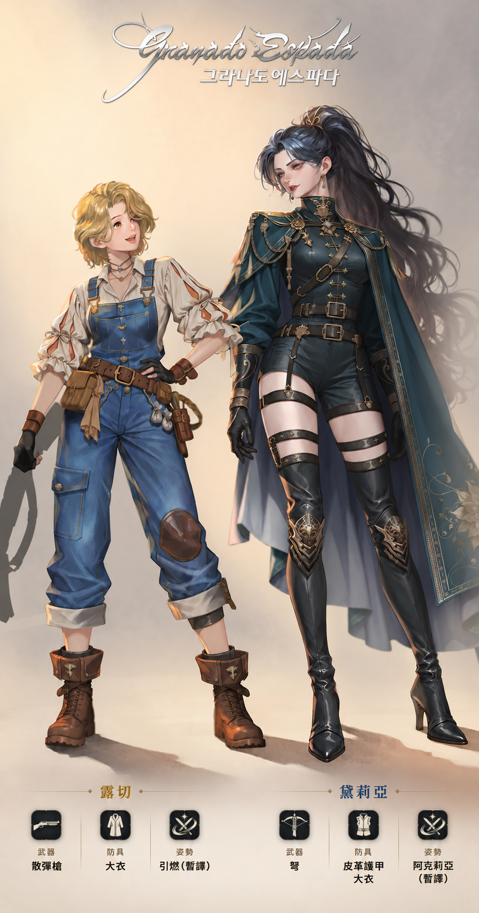

DEVELOPER'S NOTE · KOREA
2026 冬季角色搶先看

大家好，我是營運團隊的 L！
先前介紹的「吉賽爾」與「提雅」陸續推出後，不知不覺又到了寒風吹起的季節。
為了向各位介紹即將登場、為這個冬季增添色彩的角色，我們這次也趕緊準備了搶先看！
今年 11 月、12 月，以及明年 2 月將與大家見面的新角色，究竟是些什麼樣的人物呢？現在就一起來看看吧！
本文為韓版開發預告，並非 SEA 服實裝公告。文中「今年」為 2026 年，「明年 2 月」為 2027 年 2 月；六個姿勢名稱均為暫譯。

戰場上的巴爾坎，總司令卡蜜兒
還記得上一篇《BLACKOUT》開發者筆記中，那位無論如何都不願放下「執政官」之位的卡蜜兒嗎？
不過，假如事情是這樣的呢？
如果她當初拒絕了那個位置，故事會如何發展？🤔
「總司令卡蜜兒」正是從這個「如果」出發的角色。她是走上與主線劇情完全不同道路、存在於 IF 故事中的卡蜜兒。
「守護人民的位置不在議會，而是在這裡——戰場。」
卡蜜兒・巴爾坎，是卡塔伊名門巴爾坎家族的養女。
被尊稱為「將軍」、深受卡塔伊人民愛戴的養父哈米拉克・巴爾坎，在某個平靜的夏日，於自家會客室遭身分不明的刺客殺害。
鄰國將失去領袖的巴爾坎視為唾手可得的獵物，爭相越過國境。擋在他們面前的，卻是才剛拿起劍不久的卡蜜兒。
手持軍刀與盾牌的她，將侵略軍徹底擊潰。與卡塔伊攜手的巴爾坎，僅用兩年便讓大陸北方的廣大土地，盡數歸於卡塔伊的旗幟之下。
戰爭結束後，亞迪林大議會向她提出了「士師」之位。民眾的支持遠超想像，也沒有人質疑下一任執政官會是巴爾坎家的小姐。然而，卡蜜兒卻搖了搖頭。因為失去父親的那一天，讓她明白了一件事：議會的決定傳到邊境，實在需要太長的時間。
就這樣，卡蜜兒捨棄議會、選擇戰場，成為統率卡塔伊所有軍隊的總司令。
士兵們開始不再直呼她的名字，而是以「總司令」——所有軍隊的主人——來稱呼她。
然而，隨著捷報接連傳來，議會的回信卻不知為何越來越簡短……
選擇留在戰場的卡蜜兒，究竟將迎來什麼呢？
詳細內容，敬請期待本月即將公開的〈戰場上的巴爾坎，總司令卡蜜兒〉開發者筆記！

| 武器 | 軍刀／盾牌 |
|---|---|
| 防具 | 皮革護甲／金屬護甲 |
| 姿勢 | 彎刀守勢（暫譯） 出其不意（暫譯） |

救難騎士團第6中隊長，梅莉塔
首先映入眼簾的，是彷彿能融入雪地的純白大衣，以及繡在上面的金色紋樣。
沒錯，那正是各位曾在拉薇爾披風上看過的救難騎士團紋章！👀
她就是以奧勒菲西亞北部為活動範圍、執行各項任務的救難騎士團第6中隊長——梅莉塔。
過去某次作戰中，她遵循自己的直覺，將部下留在據點，獨自前去執行任務。然而就在那段時間，據點遭到身分不明的敵人襲擊，留守的部下除了唯一一人之外，全數喪命。
那唯一活下來的人，就是娜特莉。
失去奧菲莉亞與梅莉莎，又送走轉往第4中隊的唯一生還者娜特莉後，梅莉塔不再帶領任何部下，而是獨自繼續執行作戰任務。
之後，她接獲6人委員會的召集通知，返回新大陸；但傳信鴿抵達得太晚，等她回來時，會議早已結束。等待她的，只有救難騎士團即將投入討伐殭屍鬼作戰的冰冷消息。
仔細看看下方的使用姿勢欄，會發現她擁有兩種姿勢。
以銀製子彈與白磷煙幕帶領小隊的「皓白（暫譯）」，以及藏身黑色煙幕、獨自完成任務的「夜幕（暫譯）」。連她腰間掛著的圓筒，看起來也不太尋常呢？🧐
兩種姿勢所呈現的梅莉塔兩面，以及她重返新大陸後將面對的故事，敬請期待 12 月公開的〈救難騎士團第6中隊長，梅莉塔〉開發者筆記！

| 武器 | 長槍 |
|---|---|
| 防具 | 大衣 |
| 姿勢 | 皓白（暫譯） 夜幕（暫譯） |

街頭多面手，露切
吊帶工作褲、腰間掛滿的口袋與工具，這身打扮看起來似乎比起戰場，更適合出現在工坊裡？但露切拿在手上的，卻是一把散彈槍！
露切，是個在街頭出生、沒有家人陪伴長大的少女。
為了生存，她學會了槍法與各種實用技巧。雖然對槍械稱不上特別有天分，卻能憑藉多樣的本領與出色的臨場判斷，彌補實力上的不足。
儘管成長環境艱難，她的個性依然開朗樂觀，也十分親切，因而在街頭結識了不少朋友。在一位熟識商人的建議下，她渡海來到 Granado Espada，尋找新的機會。
然而最近，露切遭到盜賊團襲擊，差點丟了性命！
好不容易撿回一命的她，將救了自己的人視為恩人，開始單方面地跟著對方到處跑。
她不停強調自己會的事情很多，一定能幫上忙。（對方會有什麼反應呢……？）
露切的自我推薦究竟能不能打動對方？詳細內容，敬請期待明年 2 月公開的〈街頭多面手，露切〉開發者筆記！
| 武器 | 散彈槍 |
|---|---|
| 防具 | 大衣 |
| 姿勢 | 引燃（暫譯） |
卡巴斯的受僱執行者，黛莉亞
露切如此鍥而不捨地跟隨的恩人，正是這一位。
嘴角明明掛著微笑，眼神卻彷彿完全沒有笑意，是我的錯覺嗎？😨
黛莉亞是隸屬卡巴斯、以「精準而迅速」為信條的受僱執行者。
她以委託成功率高、行動不留痕跡而聞名，因此相信她的實力、直接指名由她執行的委託也不在少數。
有人說她出身義利埃的某個侯爵家族，也有人傳言她幼年時因某種原因遭家族逐出，但沒有任何一個說法得到證實。即使被問起過往，她也很少開口，本人似乎同樣對過去毫不在意。
對這樣的黛莉亞而言，露切只是個麻煩的存在！
面對露切不間斷的自我推薦，她始終徹底無視。
傳言的真相究竟是什麼？這兩人的關係又會如何發展？
詳細內容，敬請期待明年 2 月公開的〈卡巴斯的受僱執行者，黛莉亞〉開發者筆記！

| 武器 | 弩 |
|---|---|
| 防具 | 皮革護甲／大衣 |
| 姿勢 | 阿克莉亞（暫譯） |
結語
和我一起看完這次冬季角色情報後，各位覺得如何呢？
從留在戰場的將軍、孤身一人的中隊長，到一追一躲（？）的兩人，哪位角色最讓各位開拓家族心動呢？😁
以上就是本次 2026 冬季角色的相關消息。
最近早晚已經頗有寒意，各位開拓家族都要注意別感冒，度過一個溫暖的冬天！
謝謝大家！